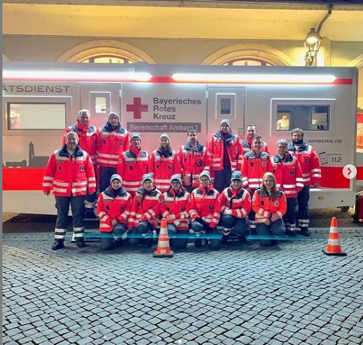

in der Ostbayernhalle in Kreuth

Die BRK Bereitschaft Amberg 1 ist für alle Veranstaltungen der ideale Ansprechpartner für sanitätsdienstliche Absicherungen. Egal ob Vereinsfest, Sportveranstaltungen, Konzert oder ein Großevent. Sanitätsdienste gehören zur Kernkompetenz der Bereitschaft Amberg 1. Jährlich betreuen wir über mehr als 300 Veranstaltungen und leisten über 8000 Einsatzstunden in diesem Bereich. Gemeinsam mit Ihnen als Veranstalter planen wir ideale Konzepte für die sanitätsdienstliche Absicherung Ihrer Veranstaltung. Zur Planung werden eventuelle Auflagen der Genehmigungsbehörden und erfahrene Praxis angewendet.
| Art | Name | Ort | Bilder | Infos |
|---|---|---|---|---|
| Feste | ||||
| Altstadtfest | Amberger Innenstadt |  | ||
| Hexennacht | ||||
| Bergfest | Mariahilfberg | |||
| Sport | ||||
| Reitsport | Ostbayernhalle in Kreuth | Reittunier in der Ostbayernhalle in Kreuth | ||
| Fußball | Amberger FC Stadion | |||
| Football | ||||
| Eishockey | Eisstadion | |||
| Kultur | ||||
| ACC | Amberg | | Summer Breeze Festival, Personaleingang | |
| Stadttheater | ||||
| Festivals | ||||
| GOND | Kreuth | |||
| Summer Breeze Open Air | Ansbach | |||